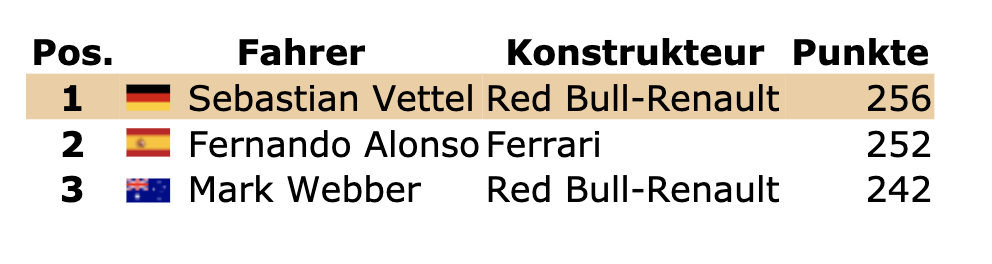

2010
Nach dem Jahr des Brawn-Rennstalls 2009, das schon relativ früh entschieden war, gab es direkt zum Start in das neue Jahrzehnt einen Dreikampf: McLaren, Ferrari und Red Bull waren die Favoriten für die neue Saison. Das Brawn-Team aus 2009 löste sich auf und bildete das neue Mercedes-Werksteam mit Nico Rosberg und Sensations-Rückkehrer Michael Schumacher als Fahrer.
Die Saison startete sehr ausgeglichen und dynamisch. Zum Start siegten die beiden Ferraris, in Australien und in China der McLaren von Jenson Button, dem amtierenden Weltmeister, und in Malaysia, Spanien und Monaco siegten die Red Bulls von Mark Webber und dem 22-jährigen Deutschen Sebastian Vettel. In der Türkei und in Kanada gab es jeweils einen McLaren-Doppelsieg, beide Male stand Lewis Hamilton ganz oben auf dem Podest. Auch in der WM-Wertung führte Hamilton; knapp vor seinem Teamkollegen Button und Red Bull-Pilot Mark Webber.
In den folgenden vier Rennen fuhr immer Sebastian Vettel im Red Bull zur Pole und es siegte drei Mal sein Rennstall, lediglich in Deutschland gab es einen Ferrari-Doppelsieg. Nach dem Rennen in Ungarn lag Mark Webber in der WM-Wertung vorne, alle Konkurrenten waren aber in Schlagdistanz, bis auf Felipe Massa im Ferrari.
In Belgien übernahm Lewis Hamilton mit einem Sieg wieder die Führung in der Fahrerwertung, um sie danach allerdings in Monza, Italien wieder an Mark Webber zu verlieren. Die beiden Red Bulls konnten ihr Momentum behaupten, da sie Singapur auf Platz 2 und 3 und Japan sogar mit einem Doppelsieg beenden konnten. Alonso konnte durch seine Siege in Italien und Singapur auf Platz 2 in der Fahrerwertung vorstoßen und verdrängte damit die McLaren auf Platz 4 und 5, die durch einige Ausfälle und auch durch Geschwindigkeitsprobleme nicht mehr mithalten konnten. Klassement nach Japan:
Dann kam das Rennen in Korea, das drittletzte der Saison. Wieder einmal holte Sebastian Vettel die Pole-Position. Am Renntag gab es heftigen Regen, der für eine Unterbrechung nach der dritten Runde sorgte. Diese Unterbrechung dauerte fast eine Stunde. Als das Rennen wieder losging, verlor Mark Webber im Regen die Kontrolle über seinen Red Bull und schied aus. Mehrere Safety-Car-Phasen folgten, da viele Autos diese Probleme hatten und es immer wieder zu Kollisionen kam. Somit konnte auch Sebastian Vettel, in Führung liegend, nie wirklich von seiner Pace im Regen profitieren, da die Fahrer aufgrund des Satefy-Cars immer wieder zusammengebracht wurden. Vettel und Alonso konnten sich aber im weiteren Verlauf des Rennens wieder vom Rest des Feldes absetzen. In Runde 46 wurde Vettel langsam, eine dicke Rauchwolke stieg von seinem Heck auf: Motorschaden. Der aus Heppenheim stammende Pilot musste das Rennen frühzeitig beenden. Alonso gewann das Rennen und konnte 25 Punkte mit nach Brasilien nehmen. Lewis Hamilton und Felipe Massa belegten die Plätze 2 und 3. Klassifikation nach Korea: Alonso übernahm die WM-Führung mit 11 Punkten Vorsprung vor Webber, 21 vor Hamilton und 25 vor Vettel. Jenson Button, der Vorjahressieger, hatte jedoch keine realistische Chance mehr.
Die letzten beiden Rennen der Saison standen an: Brasilien und Abu Dhabi. Nachdem der 23-jährige Nico Hülkenberg am Samstag im Regen die Pole-Position erreichten konnte, gewann Sebastian Vettel das Rennen vor Mark Webber und Fernando Alonso. Dabei war sein Sieg nie in Gefahr. Vettel konnte damit seinen Rückstand auf Alonso um 10 Punkte und auf Webber um 7 verringern. Lewis Hamilton wurde nur Vierter und musste sich ebenfalls aus der Vergabe der Weltmeisterschaft verabschieden, sein Rückstand war zu groß. Mit der folgenden Ausgangslage ging es in das Saisonfinale in Abu Dhabi:
Der große Preis von Abu Dhabi 2010
Fernando Alonso hatte die Chance, zum dritten Mal Weltmeister zu werden, er musste nur Zweiter werden und das ebenfalls auch nur, wenn Webber gewinnen sollte. Und für Sebastian Vettel war es, in Anbetracht des Rückstandes von 15 Punkten, höchste Pflicht, die maximale Ausbeute von 25 Punkten zu bekommen.
Die Pole sicherte sich zum 10. Mal in dieser Saison Vettel. Hamilton startete von Position zwei, Alonso von drei, Button von vier Webber von fünf.
Am Start kam Alonso etwas schlechter weg als seine Konkurrenten. Er verlor einen Platz an Webber. Jedoch kam es direkt in der ersten Runde zu einer Kollision, die eine Safety Car-Phase auslösten, die Trümmerteile lagen überall auf der Strecke. Während dieser Phase absolvierten einige Autos einen Boxenstopp, darunter der Mercedes von Rosberg und der Renault von Petrov. Die Mercedes-„Silberpfeile“ und besonders die Renaults waren sehr schnell am diesem Wochenende. So schnell, dass sie, eigentlich völlig unbeteiligt, die Weltmeisterschaft 2010 entscheiden würden.
Dann folgten die WM-entscheidenden Fehler: Webber kam in Runde 12 die Box und fiel hinter Petrov und Rosberg zurück. Und die Ferrari-Strategen hatten nur Augen für Webber, es war ihnen nahezu völlig egal, dass zu Vettel und den McLaren eine riesige Lücke aufklafft.
Es kam, wie es kommen musste. Zwar kam Alonso mit einer Sekunde vor Webber raus, allerdings auf dem 12 Platz und, das Allerschlimmste: Sowohl hinter Rosberg, als auch Petrov. Der WM-Stand zu diesem Zeitpunkt: Zu diesem Zeitpunkt wäre Sebastian Vettel Weltmeister!
Währenddessen steckte Alonso weiter mitten im Feld fest. Immer, wenn er nah an Petrov war, kam er auf der Geraden nicht vorbei. Vettel wurde durch seinen Boxenstopp von der Spitze verdrängt, konnte jedoch nach dem von Button wieder die Spitze übernehmen.
Die Kombination aus Rosberg-Petrov-Alonso-Webber fuhr sich bis auf Platz 6-7-8-9 vor. Dann stoppte Kubica, der zweite Renault-Fahrer. Er hatte einen genügenden Vorsprung herausgefahren, um vor Alonso wieder auf die Strecke zu kommen. Und zu Alonsos und Webbers Unglück kam er tätsachlich vor ihnen wieder auf die Strecke. Nun hieß es Rosberg-Kubica-Petrov-Alonso-Webber. Nun wurde die Lage bei Ferrari echt bedrohlich. Alonso musste so schnell wie möglich an den beiden Renault vorbei. Der Zwischenstand:

Alonso musste nach dem neuen Punkteregelement mindestens Fünfter werden, um mit Vettel Weltmeister zu werden, wegen Punktgleichheit und gleicher Anzahl an Siegen. Es tat sich nicht mehr viel. Sebastian Vettel überquerte als erster die Ziellinie.
Originalfunk von ihm und seinem Renningenieur:
„Ok,
Sebastian. Good job! I need to wait until everybody crosses the line, I need to wait, but it’s looking good! You just wait, sunshine, you just wait...
...Hamilton P2, Button P3. There’s another two cars going round at turn 15 and 16. Rosberg P4, Kubica P5; DU BIST WELTMEISTER!“
Vermutlich Teamchef Christian Horner: „Sebastian Vettel, you are the world champion! The world champion! Well done, enjoy it! You are the man!“
Vettel (vor Freude weinend): „...Thank you boys. Unbeliev... unbelievable! Thank you, I love you! I need a moment...“
Sebastian Vettel hatte es tatsächlich geschafft: Der 23-Jährige aus Heppenheim trat das Erbe von Michael Schumacher an und wurde der zweite deutsche Weltmeister in der Formel 1.